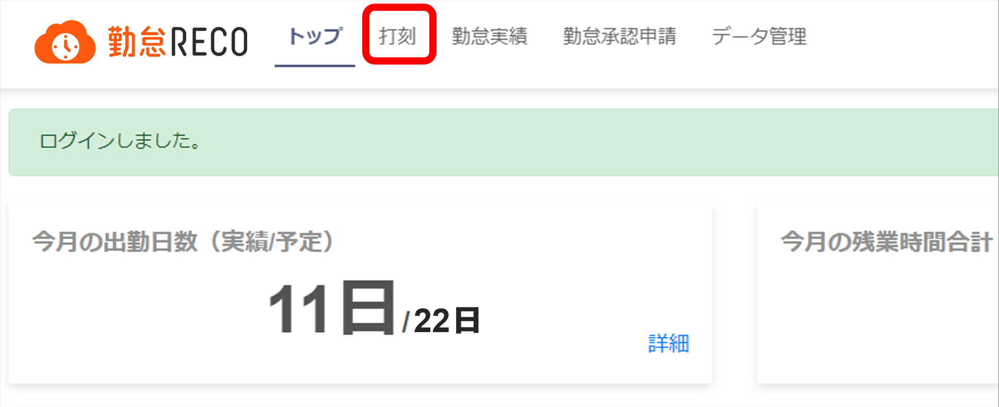
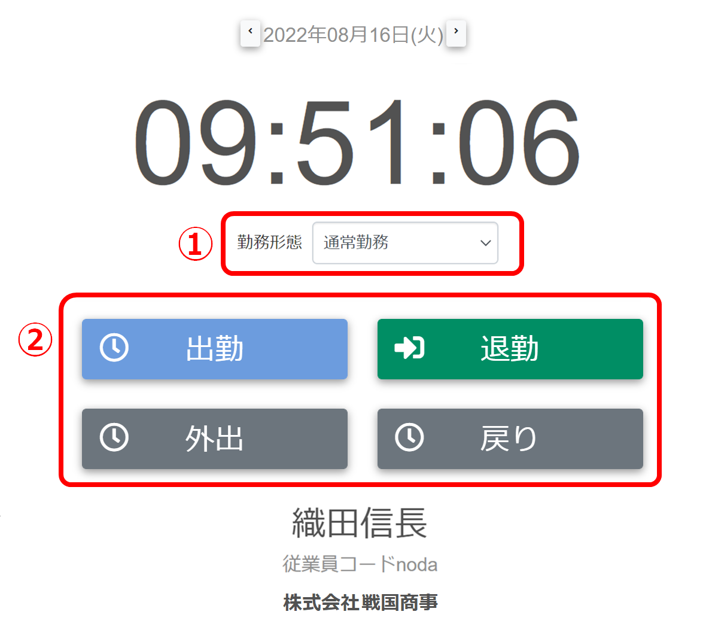
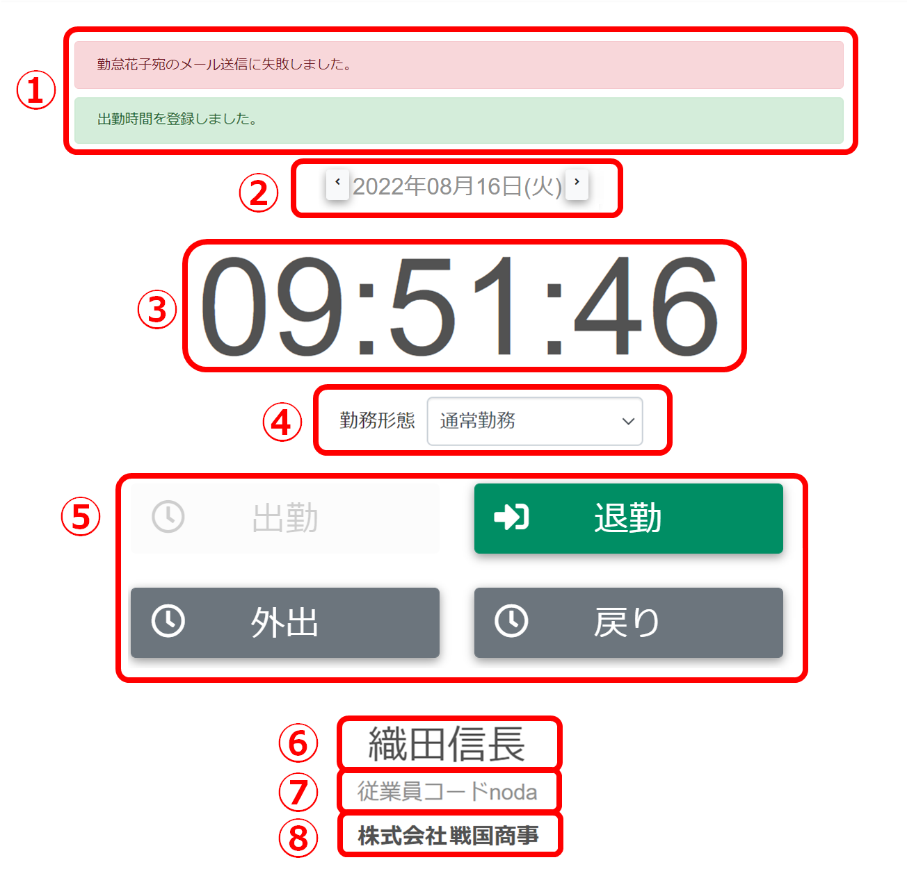

打刻する
勤怠RECOでタイムカードと同様の打刻処理ができます。
打刻処理は［打刻］画面で行います。
|
ご注意 |
打刻画面のURLをブックマークに登録していると、打刻しても実績に反映されない場合があります。 ログイン画面をブックマークしてください。 |
|---|
-
［打刻］をクリックする

打刻画面が表示されます。
-
打刻ボタンをクリックする（②）
複数の勤務形態がある場合は、出勤の打刻をする前に、その日の勤務形態を選択してください（①）。

出勤打刻が済むと画面が次のように切り替わります。

-
メッセージ
メッセージが表示されます。
出勤打刻処理完了後：「出勤時間を登録しました。」
退勤打刻処理完了後：「退勤時間を登録しました。」
外出打刻処理完了後：「外出時間を登録しました。」
戻り打刻処理完了後：「戻り時間を登録しました。」
勤怠承認者宛メール送信失敗：「（承認者名）宛のメール送信に失敗しました。」
-
日付
打刻する日を選択します。日付をまたぐ打刻が必要な場合は、手動で日付を変更してください。
【例】2/19に準夜勤（16:00～24:30）であり、翌日2/20の1:00に退勤した場合
退勤時には日付を2/19に戻して打刻する
【例】2/19に夜勤（0:00～8:30）であり、前日2/18の23:30に出勤した場合
出勤時には日付を2/19に進めて打刻する
-
現在時刻
現在の時間（日本標準時 UTC/GMT +9 時間）です。
-
勤務形態
登録されている勤務形態が表示されます。
その日の勤務形態を選択してください。
-
打刻ボタン
クリックすると、各種打刻を行います。
会社の設定によっては、出勤を打刻しないとその他の打刻ボタンが押せない状態となります。
会社の方針で15分単位や30分単位での勤怠が設定されている場合は、出勤打刻後、同じ分区分内での退勤打刻はできません。
出勤：勤怠実績に出勤打刻時間が登録されます。
退勤：勤怠実績に退勤打刻時間が登録されます。
外出：勤怠実績に中抜けの外出時間が登録されます。
戻り：勤怠実績に中抜けの戻り時間が登録されます。
ご注意
・中抜け時間がまるめられた場合、戻り時間は「外出打刻時間」に「まるめ後の中抜け時間」を足した時間となります。実際の戻り打刻時間とは異なりますのでご注意ください。
・打刻機をご利用の場合、退勤打刻後に戻り打刻を行うと、戻り打刻が翌日の勤怠実績に登録されてしまいます。戻り打刻を忘れた場合は、勤怠実績から手動で登録してください。
-
名前
ログインユーザーの名前です。
-
従業員コード
ログインユーザーの従業員コードです。
-
会社名
ログインユーザーの所属会社名が表示されます。
-